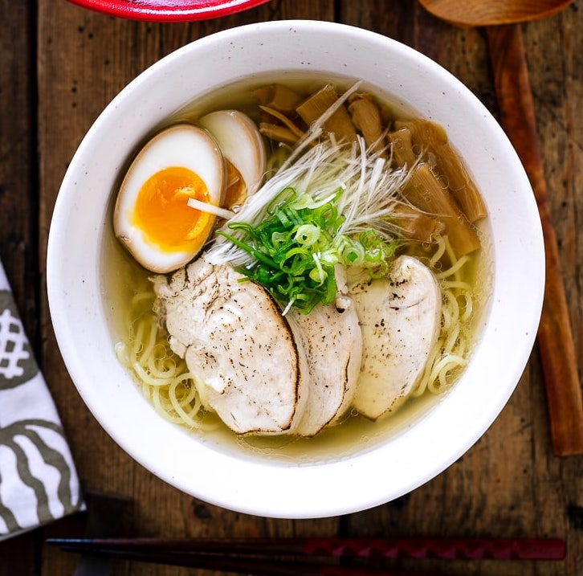

Shio Ramen Recipe

Welcome everyone. Here we will learn to make the very tasty and
extremely organized soup called Ramen. There are many different ramen
soups with different broths and different toppings. But here is where we
will learn to make Shio Ramen.
Ingredients
- Fresh egg noodles
- Dashi - kombu, dried shiitake mushrooms, dried anchovies, and dried
bonito flakes.
- Ramen broth - ground chicken, ginger,
garlic, and Tokyo negi or green onions.
- Chicken Chashu - boneless, skin-on chicken
breast (use skin for aromatic oil).
- Shio tare(the salt-flavored sauce) - sake, mirin,
soy sauce, fish sauce, salt
- Aromatic oil - chicken skin (from the breast) and Tokyo negi
- Ramen toppings of your choice - Ramen Eggs, menma
(seasoned bamboo shoot), chopped scallions.